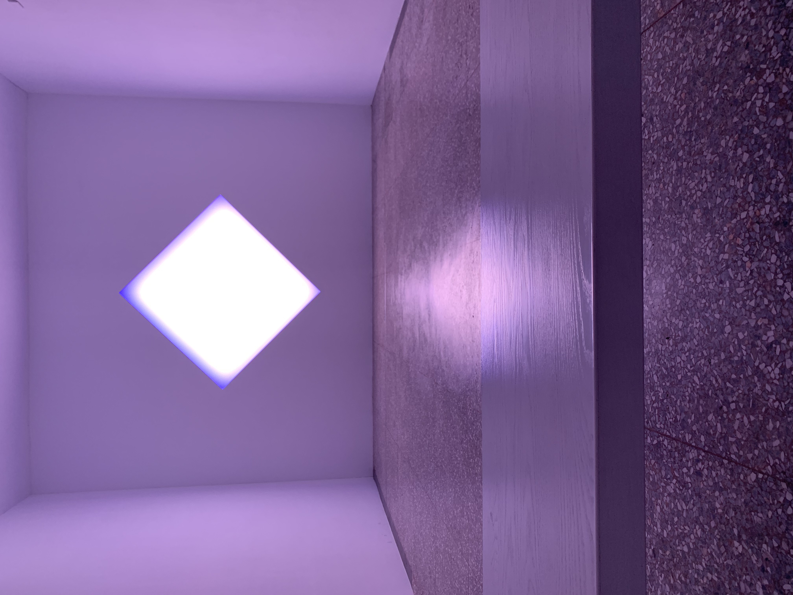
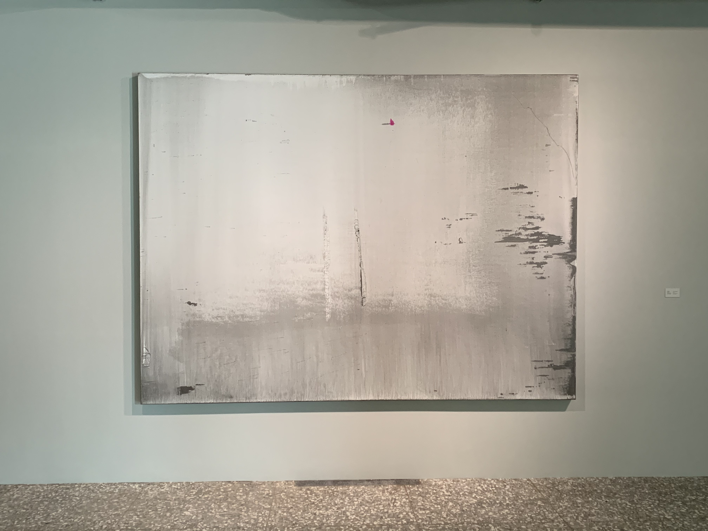

Art Review
One’s desire, if powerful enough, can illuminate everything around him, so sturdily that surrounding disturbance cannot affect him. – Yungtien Shao
當一人的願力強大到一個程度，他足以照亮身邊所有事物，而世上的紛擾並無法影響他於萬一 – 邵永添
30 January 2021 ALIEN Art Centre | Diamond (Square on Point) | James Turrell 金馬賓館 | 鑽石（菱格） | 詹姆士特瑞爾

The famous American artist James Turrell has worked with light and space to create artworks that engage viewers with the limits and wonder of human perception for over fifty years. Just as he said before, “My desire is to set up a situation to which I take you and let you see. It becomes your experience.”
美國知名藝術家詹姆斯特瑞爾，超過五十年間，以光線和空間，作為藝術品創作的素材，讓觀眾沈浸在人類感知的極限與驚奇。就像他曾經說過，「我希望去創造一個環境讓你看見，並成為你的經驗。」
The Diamond (Square on Point) is one of the large-scale format in James Turrell’s ongoing series of Glass wall-installation begun in 2004, which inspired by the narrowest passage of water used for international navigation around the world. When viewers look closer at this artwork, lights installed in the walls were making it glow different shades—first fuchsia, then baby blue, then light lavender. Everything in the room also kept changing color. From different angles of view, the illuminated diamond looks like a pyramid, a white squares floating on the wall, and a lozenge of light that seems to pulsate as its colors shift.
《鑽石》（菱格）是詹姆士特瑞爾自2004年來，進行的一系列玻璃系列裝置中，大規模的作品之一，其靈感來自於國際航運中一些最狹窄的水道。當觀眾仔細地觀賞此作品，牆上的光會以不同影子閃耀著 - 先從紫紅色，淡藍色，最後是薰衣草紫，房間裡的所有的物品都同樣染上多變的色彩。從不同視角，也存在不同的驚喜，這發亮的鑽石，有時像金字塔，有時像漂浮在牆上的色塊，或者像個隨著色彩改變晃動的菱格光。
It is a pleasure to venture to transcendent beauty between light and space. When I walked into this little room, and stared at this artwork for a while, uncertainty and silence were all I sensed at that time, just like a dreamlike feeling wandering in my head. The peculiarly refreshed sensations of this artwork lasts for quite a long time to ponder the message James Turrell wants us to experience.
能夠有機會體驗，光與空間創造的極致美，我感到十分幸運，當我走進這小房間，靜靜地看著這作品，有種不確定卻平靜的感受湧上心頭，就像夢境一樣，真真假假的。這全新且特別的感知體驗，在我心中停留了一段時間，默默地思考詹姆士特瑞爾想傳達給觀眾的意義。
And I think it’s the imperceptible, time-dilating slowness in mind.
最後，我想是，人們內心那難以察覺，有如時間膨脹的慢活。
“My material is light, and it is responsive to your seeing” – James Turrell
「我的素材是光，而它負責創造你的視覺驚喜。」- 詹姆士特瑞爾
30 January 2021 ALIEN Art Centre | In Silence | Lin Hong-Wen 金馬賓館 | 於 默默 | 林鴻文
